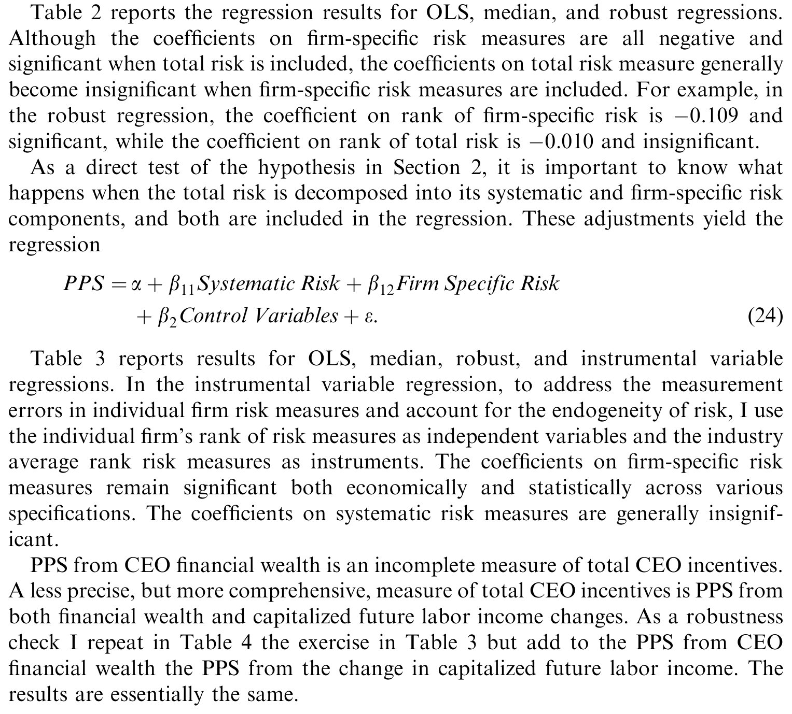
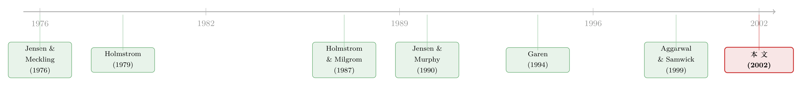

同样是风险，为什么只有「自家的」那一份压住了老板的激励？
本文读的是 Li Jin (2002, Journal of Financial Economics)：当我们把一家公司的风险拆成「市场风险」与「公司自有风险」两块，委托代理理论里那条「风险越大、激励越低」的老规矩，其实只对后者成立。CEO 激励水平（pay–performance sensitivity, PPS）随非系统性风险单调下降，却与系统性风险无关——只要 CEO 能自由交易市场组合。这把一条二十年没人细看的实证关系，拆出了一个干净的理论裂缝。
1 一条人人会背、却从没被拆开的规矩
学过一点公司金融的人，大概都能脱口而出委托代理理论 (principal–agent theory) 里那条最经典的权衡：给 CEO 的激励越强，他就得替自己背越多的公司风险；于是当一家公司风险越大，最优的激励水平就应该越低。这是在「激励」与「最优风险分担」之间做的取舍，从 Jensen 和 Meckling (1976)、Holmstrom (1979) 一路写下来，几乎成了教科书的标准答案。
实证上也确实有人验过。Aggarwal 和 Samwick (1999)、Garen (1994) 都发现：风险更高的公司，CEO 的薪酬对股价的敏感度更低。看上去，理论与数据严丝合缝，这事似乎已经盖棺定论了。
但真正关键的一步，恰恰是这些研究都没走的那一步——它们用的都是总风险 (total risk)。
一家公司的股价波动，从来不是铁板一块。用资本资产定价模型 (Capital Asset Pricing Model, CAPM) 的语言，它至少能拆成两半：跟着大盘一起动的那部分，叫系统性风险 (systematic risk)；只属于这家公司自己的那部分，叫非系统性风险，也就是公司自有风险 (firm-specific risk)。Li Jin 在这篇 2002 年的 JFE 论文里问了一个听上去理所当然、却从没人认真回答过的问题：
这两种风险，对「该给 CEO 多少激励」这件事，真的是同一回事吗？
直觉上不该是。理由有两条，而它们正是全文的发动机：
第一，承担成本不对称。 公司自有风险，分散化的股东几乎不在乎——他们手里握着成百上千只股票，这点特质波动早被对冲掉了；可 CEO 不行，他的财富大头都押在自己这一家公司上，是个彻头彻尾的「不分散」投资者。所以让 CEO 扛公司自有风险，是双方成本差距极大的安排。但市场风险呢？股东也怕它——后面会看到，这是全文最微妙的地方。
第二，CEO 能不能「自己调」。 公司自有风险，出于激励的需要，CEO 必须扛着，不能对冲（对冲它等于架空了激励，甚至涉嫌违法）。可市场风险不一样：CEO 完全可以在自己的账户里做空一份标普 500，把薪酬合约里那块市场敞口悄悄抵消掉——而这么做丝毫不损害激励。
把这两条直觉拧在一起，一个反转就呼之欲出了：既然 CEO 能自己交易市场组合，那么薪酬合约里初始塞了多少市场风险，根本不重要——他自己会调。于是市场风险或许压根不该进入「最优激励」的计算。下面，作者用一个干净的模型把这件事坐实。
2 模型：把「市场风险」与「自有风险」分开定价
这是一篇理论 + 实证两条腿走路的论文，理论那条腿尤其漂亮。下面这节会把两个模型的关键推导一步步走完——它们的差别只在一句话：CEO 到底能不能交易市场组合。看懂了这一句，后面的实证就全通了。
2.1 共同的设定
把公司下一期的市值 \(X\) 按 CAPM 拆开。设初始市值为 \(x\)、beta 为 \(\beta\)，则下一期市值可以写成一个均值项加上两个零均值的风险项：
$$ X = \bar{X} + Z(\tilde{r}_m - r_m) + \tilde{d} $$
这里 \(Z = x\beta\) 是「市值 × beta」，正是公司市场风险敞口的度量；\(\tilde{d} = x\tilde{e}^\ast\) 是公司的美元自有风险。两个风险源的方差分别记作 \(\operatorname{Var}(\tilde{r}_m - r_m) = \sigma_m^2\) 和 \(\operatorname{Var}(\tilde{d}) = \sigma_d^2\)。
CEO 的努力 \(e\) 线性地抬高公司均值：\(\bar{X} = X_0 + ke\)，\(k\) 是努力的生产率。努力本身有个不可观测的成本 \(f(e)\)，递增且凸（为简化，假设 \(f''(e)\) 为常数）。沿用 Holmstrom 和 Milgrom (1987, 1991) 的经典做法，合约取线性形式 \(\pi_A = bX + s\)，其中 \(b\) 就是我们最关心的激励斜率（即 PPS）。
CEO 是均值–方差偏好（风险厌恶系数 \(g_A\)），他拿到合约后的确定性等价收益是：
$$ CE_A = \left(b\bar{X} + s - f(e)\right) - \tfrac{1}{2}\,b^2 g_A\left(Z^2\sigma_m^2 + \sigma_d^2\right) $$
注意括号里那一项 \(Z^2\sigma_m^2 + \sigma_d^2\)——这是 CEO 通过合约背下来的总风险，市场的和自有的都在里面。关键的分岔点，就在于 CEO 能不能把前一块卸掉。
2.2 模型 I：CEO 不能交易市场组合
先看最传统的假设：CEO 既不能做多也不能做空场外组合，薪酬合约是他唯一的风险来源。股东则照 CAPM 给自己那部分收益定价，于是股东的确定性等价是 \(CE_P = (1-b)[\bar{X} - Z(r_m - r_f)] - s\)。
委托人最大化自己的收益，受 CEO 的参与约束与激励相容约束（后者在 \(f\) 可导时退化为一阶条件 \(f'(e) = bk\)）所限。解出来的最优激励斜率是全文最核心的一个方程：
这个式子里藏着三个含义，前两个正是全文的命门：
其一，\(b^\ast\) 随自有风险 \(\sigma_d^2\) 单调下降。 \(\sigma_d^2\) 只出现在分母（标注 a3 那块），自有风险越大，CEO 失去分散化的成本越高，提供激励越贵，于是激励越低。这是那条老规矩，在自有风险上完好无损。
其二，\(b^\ast\) 与市场风险 \(Z\) 的关系是「不确定」的。 这是反直觉、也是最妙的一点。\(Z\) 同时出现在分子（标注 a1，带正号）和分母（a3，带平方）。直觉上：委托人替 CEO 承担市场风险的边际成本，由市场风险的价格 \(r_m - r_f\) 决定；而 CEO 承担市场风险的边际成本，由他的风险厌恶 \(g_A\) 与敞口 \(Z^2\sigma_m^2\) 决定。如果 CEO 的边际成本反而更低，却因为流动性约束没法在场外自己加这块风险，那么公司市场风险一上升，反而最优地应该提高激励 \(b^\ast\)。换句话说，市场风险与激励的关系，符号都说不准。
其三，努力生产率 \(k\) 越高，\(b^\ast\) 越高——这点和标准模型一致，不再展开。
2.3 模型 II：CEO 能自由交易市场组合
现在松开那道枷锁：CEO 可以在场外投资任意正负金额 \(I_A\) 于市场组合，余额放在无风险资产里。他会先把合约里的市场敞口算进总账，再选一个最优的 \(I_A\)。对 \(I_A\) 求一阶条件，解得：
$$ I_A = \frac{r_m - r_f}{g_A \sigma_m^2} - bZ $$
这个式子讲了一个极漂亮的两步故事：第二项 \(-bZ\) 表示 CEO 先把合约里塞进来的那块市场敞口 \(bZ\) 完全做空抵消；第一项 \((r_m - r_f)/(g_A\sigma_m^2)\) 则是任何一个同样风险厌恶的局外人都会选的最优市场仓位——他随后再按自己的口味把市场风险加回来。也就是说，合约里初始给了他多少市场风险，被他「先清零、再重装」，最终一点痕迹都不留。
于是把这套行为代入委托人问题，最优激励斜率塌缩成一个干净得多的式子：
$$ b^\ast = \frac{k^2}{g_A \sigma_d^2\, f''(e) + k^2} $$
看分母——市场风险 \(Z\)、市场方差 \(\sigma_m^2\) 全消失了，只剩下自有风险 \(\sigma_d^2\)。这正是命题的两个核心结论：
- \(b^\ast\) 依旧随自有风险 \(\sigma_d^2\) 下降；
- \(b^\ast\) 完全不受市场风险 \(Z\) 影响——因为委托人和 CEO 都能交易市场组合，两人把承担市场风险的边际成本都拉到等于市场价格，初始怎么分根本无所谓。
一句话总结理论：CEO 激励的主要成本，是被迫扛着大量公司自有风险而失去的分散化；市场风险则因为可以交易而被「中和」掉了。这也顺带给「相对业绩评价 (relative performance evaluation)」做了个理论注脚——作者证明，当 CEO 很难自行对冲市场风险时（2.3.1 节的「不能做空」扩展），市场风险才会重新单调地压低激励，此时相对业绩评价才真正有福利价值。这一点与 Garvey 和 Milbourn (2001) 的同期发现相互印证。
3 识别策略：把一个理论命题翻译成可检验的回归
理论给了一个清清楚楚、可证伪的预言：控制住一种风险，看另一种风险与激励的偏相关。这就是全文的识别逻辑——不是去验「风险压低激励」这个笼统命题，而是去验「哪一种风险在压低激励」。
- 被解释变量：激励水平，即 CEO 财富对公司股价表现的敏感度（PPS）。
- 核心解释变量：把每家公司的总风险，用市场模型回归拆成系统性与非系统性两块，分别度量。
- 理论预言：控制系统性风险后，非系统性风险应显著为负；控制非系统性风险后，系统性风险应不显著。
数据来自 Standard & Poor's 的 ExecuComp 数据库——这是研究高管薪酬绕不开的标准数据源，观测单位是「公司–CEO–年」。为了让结论稳，作者用了三种回归方法并排跑：普通最小二乘 (OLS)、中位数回归 (median regression) 与稳健回归 (robust regression)，后两者专门用来压制高管薪酬数据里那些臭名昭著的极端值。结果如表 2 所示。

Table 2: reports the regression results for OLS, median, and robust regressions
结果与理论高度吻合：非系统性风险的系数在三种方法下都显著为负——公司自有风险越高，激励越低，老规矩在这里成立；而系统性风险的系数在控制了自有风险之后，不再有显著关系，正是模型 II 预言的「市场风险无关」。这个模式对换用不同的风险分解方式、加入已知影响激励的控制变量，都相当稳健。
别忘了模型 I 留的那条尾巴：如果 CEO 没法自由对冲市场风险（比如做空标普期货要交保证金、要担无限责任），市场风险就该重新压低激励。作者据此切了一个子样本——持股比例高于平均的 CEO，他们更可能被做空约束卡住。在这群人里，他确实找到了「激励随系统性风险下降」的证据。这一步把理论的两种情形都接到了数据上，是全文识别上最讲究的设计。
值得一提的是那几个「锚定现实」的真实数字：美国战后市场风险溢价年均约 7%，说明代表性投资者对系统性风险仍然高度厌恶——这正是作者敢于假设「股东也怕市场风险」、从而跳出「风险中性委托人」旧框架的底气。另据 Meulbroek (2001) 的测算，一个把全部财富压在公司里的 NYSE 普通高管，只把手中期权估到其市场价值的 70%；而对那些飞速成长的互联网型公司，这个比例低到只有 53%——失去分散化的成本，量级触目惊心。（关于「卖不掉的股票到底值多少」，可另见《纸面上的百万富翁：一只「卖不掉」的股票，到底值多少钱？》。）
4 文献脉络
这条线的源头，是 Jensen 和 Meckling (1976) 把代理成本写进公司理论、以及 Holmstrom (1979) 把道德风险 (moral hazard) 与可观测性的权衡形式化。随后 Holmstrom 和 Milgrom (1987) 论证了在 CARA 偏好下线性合约的最优性，给后来所有「线性 PPS」的实证研究铺好了地基。Jensen 和 Murphy (1990) 第一次把 PPS 量成一个可比的数字，掀起了实证高管薪酬研究的浪潮。

到了九十年代末，Garen (1994)、Aggarwal 和 Samwick (1999) 用大样本确认了「风险越高、激励越低」的负相关——但他们用的都是总风险。本文所处的位置，正是站在这条「风险–激励权衡」实证传统的肩膀上，往里多切了一刀：把总风险拆开，指出那条负相关其实几乎全部来自非系统性那一半，并用一个「股东也厌恶市场风险」的均衡模型解释了为什么。它既是对 Aggarwal–Samwick 实证的精细化，也是对 Holmstrom–Milgrom 理论的一次有针对性的扩展。（沿这条「把破产、风险结构写进高管合约」的思路往下走，可参见《股票还是期权？把「破产」写进高管的工资条》；而关于「激励到底奖励了什么」的另一种切法，见《奖金，奖的不是「赚到钱」，而是「说了算」》。）
5 评论与延伸（Q&A + 研究方向）
(a) 几个可能的疑问
Q：把总风险拆成两块，真有那么重要吗？不就是多控制了一个变量？
重要，而且是质的不同。旧文献用总风险，等于把「成本差距悬殊、不可对冲」的自有风险，和「成本差距小、可对冲」的市场风险混成一锅。本文的贡献正是证明：那条著名的负相关，本质上是自有风险的故事，市场风险只是搭了便车。混在一起看，你永远分不清是哪种力量在起作用，也就解释不了「为什么」。
Q：模型假设 CEO 能自由做空市场组合，这现实吗？
作者自己很诚实——不现实，所以才有 2.3.1 的「不能做空」扩展和高持股子样本的检验。完整的图景是：自有风险永远压低激励（铁律）；市场风险只在 CEO 被约束、无法自行对冲时才压低激励。两种情形的实证证据他都给了，这正是全文比纯理论更扎实的地方。
Q：风险是不是内生的？CEO 可能根据激励方案反过来调整公司的风险。
这是最该担心的识别威胁。作者引 Aggarwal 和 Samwick (2001) 说明 CEO 似乎并不会为了迎合激励方案去优化公司风险特征，并在稳健性部分讨论了用工具变量处理风险内生性的做法。但坦率说，这一块仍是全文最薄的环节——见下面我的判断。
Q：为什么市场风险溢价 7% 这个数字对论证这么关键？
因为它推翻了「风险中性委托人」的旧假设。如果代表性投资者真的风险中性，市场风险就该被套利掉、溢价归零；可现实里它稳稳地是正的、还很大，说明连「市场整体」这个层面的风险，股东都还在厌恶。一旦股东也怕市场风险，「谁该扛市场风险」就成了一个真问题，而不是默认全甩给 CEO——这正是模型 I 里 \(b^\ast\) 对 \(Z\) 符号不确定的根源。
Q：这和「相对业绩评价」是什么关系？
是一枚硬币的两面。若公司能就市场表现和公司自有表现分开签约（2.3.2 节），效果和「CEO 能交易市场组合」完全等价——都让市场风险与激励脱钩。这正是相对业绩评价的核心主张：只奖励剔除大盘后的业绩。本文从理论上说明，相对业绩评价在「CEO 难以自行对冲」时才真正增进福利，给这个长期观测不足的现象提供了一个条件性的解释。
Q：结论对实践有什么直接含义？
一句话：设计激励合约时，该盯着的是公司的自有风险而非总风险。两家总波动相同的公司，beta 高的那家未必需要更低的激励；真正该调低激励的，是特质波动高的那家。这对「为什么高科技、互联网公司给的股权激励反而很高」之类的现象，提供了一个不靠行为偏差的理性解释。
(b) 几个可能的研究问题与提案
1. 把这套「风险分解 → 激励」逻辑搬到债权人身上。 - 【经济故事】CEO 之外，公司的债权人同样在为风险定价。如果把信用利差拆成系统性与特质两块，会不会也只有特质违约风险压低了某些契约条款（如薪酬追回、限制性条款）的严格程度？激励与债务契约本是一体两面。 - 【可行性】中。需要把高管薪酬数据（ExecuComp）与公司债的逐券数据（如 TRACE）匹配，风险分解可用结构模型或市场模型残差。识别上要处理评级与风险的内生性，doable 但工作量不小。
2. 用「对冲工具可得性」的外生变化做自然实验。 - 【经济故事】本文的因果核心是「CEO 能不能对冲市场风险」。如果某个时点零成本领圈 (zero-cost collar)、个股期货等对冲工具的可得性发生了外生跳变（如监管或税法变动），就能直接检验：可对冲性一旦改善，市场风险与激励的关系是否真的从「负」走向「无关」。 - 【可行性】中偏低。难点是找到一个干净、外生、且与公司风险无关的对冲可得性冲击；Bettis 等 (2001) 记录的领圈使用普及或许是个切入点，但内生性强。
3. 外资持有人结构如何改变激励合约？ - 【经济故事】公司自有风险之所以压低激励，前提是股东「已经分散化」。如果一家公司的股东里外资比例高、整体分散化程度更深，他们承担特质风险的成本优势更大，是否会反过来容忍更高的 PPS？这把本文的「分散化」机制推到了股东异质性的维度。 - 【可行性】中。需要跨国持股数据（如 FactSet/机构持股）与高管薪酬匹配。识别可借助指数纳入等外生持股变动。与流动性、外资行为这条线天然契合。
4. 把「不可对冲」做成连续度量，而非二元子样本。 - 【经济故事】本文用「持股是否高于平均」这个粗糙的二元切分来代理「做空约束是否绑定」。但约束的松紧本是连续的——可以用 CEO 财富集中度、对冲工具流动性、内部人交易窗口长度等构造一个连续的「对冲难度指数」，看市场风险系数是否随它单调变负。 - 【可行性】高。所需变量大多能从 ExecuComp、内部人交易披露与期权市场数据构造，是对原文识别的一次直接加固，门槛不高。
我的判断
贡献上，这篇论文做了一件「事后看显然、事前没人做」的漂亮工作：它没有去推翻「风险压低激励」，而是把这条规矩切成两半，指出只有一半成立，并用一个干净的均衡模型说清了另一半为什么不成立。理论上最值得称道的，是它放弃了「风险中性委托人」这个被用滥了的简化，正视了市场风险溢价为正这一事实，从而让「谁该扛市场风险」第一次成为一个有内容的问题。模型 II 里那个「先清零、再重装」的两步交易直觉，更是把抽象的代数翻译成了一句人人能懂的话。
对识别的担忧有两处。其一是风险的内生性：尽管作者援引证据说 CEO 不会为迎合激励去调风险，但「激励 ← 风险」与「风险 ← 激励」的反向因果在横截面回归里很难彻底排除，工具变量那一段的说服力有限。其二是「约束是否绑定」的代理变量太粗：用「持股高于平均」来识别「被做空约束卡住的 CEO」，混入了太多其他因素（高持股本身可能就意味着创始人、控制权动机等），这一步的因果解读要打折扣。
后续最想看到的，是把「能否对冲市场风险」从一个二元子样本，升级成一个有外生变动的连续度量——理想情况下，是一次对冲工具可得性的政策实验。果真如此，本文这条「市场风险只在不可对冲时才咬人」的预言，就能从一个相关性证据，变成一个干净的因果证据。那才是这篇论文真正缺的最后一块拼图。
参考文献
- Aggarwal, R., Samwick, A. (1999). The other side of the trade-off: the impact of risk on executive compensation. Journal of Political Economy 107, 65–105.
- Aggarwal, R., Samwick, A. (2001). Why do managers diversify their firms? Agency reconsidered. Unpublished working paper, Dartmouth College.
- Garen, J. (1994). Executive compensation and principal–agent theory. Journal of Political Economy 102, 1175–1199.
- Garvey, G., Milbourn, T. (2001). The RPE puzzle: the answer lies in the cross-section. Unpublished working paper, Washington University in St. Louis.
- Holmstrom, B. (1979). Moral hazard and observability. Bell Journal of Economics 10, 74–91.
- Holmstrom, B., Milgrom, P. (1987). Aggregation and linearity in the provision of intertemporal incentives. Econometrica 55, 303–328.
- Holmstrom, B., Milgrom, P. (1991). Multi-task principal agent analysis: linear contracts, asset ownership and job design. Journal of Law, Economics, and Organization 7, 24–52.
- Jensen, M., Meckling, W. (1976). Theory of the firm: managerial behavior, agency costs and ownership structure. Journal of Financial Economics 3, 305–360.
- Jensen, M., Murphy, K. (1990). Performance pay and top management incentives. Journal of Political Economy 98, 225–264.
- Jin, L. (2002). CEO compensation, diversification, and incentives. Journal of Financial Economics 66, 29–63.
- Meulbroek, L. (2001). The efficiency of equity-linked compensation: understanding the full cost of awarding executive stock options. Financial Management 30, 5–30.